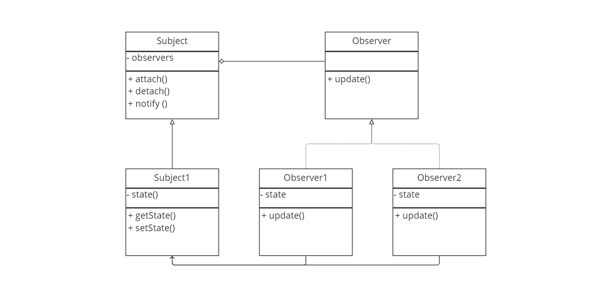
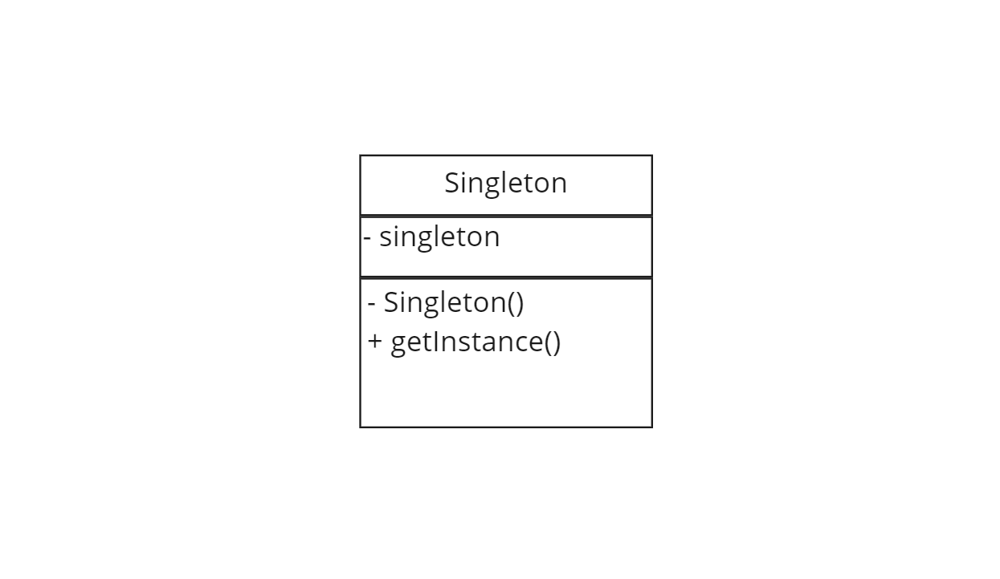

Object-oriented programming is a programming paradigm: a style of programming with a unique set of structures, features and approaches for tackling programming challenges. Object-oriented program evolves from the concept of classes and objects. Classes represent sets of like objects, objects represent instances of a class. Classes, and thus objects of classes, have data and methods to manipulate that data.
The nodes in the above diagram represent individual components of code within a set of components of code. For example, methods within a class, classes within a package, packages within a module, modules within a library, etc. Edges represent some sort of dependency, for instance, function calls, API calls, importations, etc, where a code component requires information from an external code component.
Components of code can have high or low coupling, determined as the number of interdependencies between them, and high or low cohesion, determined by the number of internal dependencies within them. The upper structure has low cohesion and high coupling (not ideal). The lower structure has high cohesion and low coupling (ideal).
If we color-code class public methods white and private methods black, we have a nice heuristic for how APIs abstract away implementation details. Moving down levels of abstraction towards the lowest-levels of implementation can be visualised as zooming in through sets of nodes on a white-black color-gradient. The use of access modifiers (public, private, etc) is often referred to as 'information hiding'.
The mathematical language of set theory is applicable to class relations. If every object of class B is an object of class A, then B 'Is-a' A, B is a subclass of superclass A, B is a child class of parent class A. If every object of class B is associated with an object of class C, we can say that every B 'has-a' C, or that B relates to C. Inheritance exists as an 'is-a' relationship. Child classes inherit the parent class's public variables and methods, which can be kept as is, overridden or redefined. This flexiblity is referred to as polymorphism
Abstract classes are classes that cannot be instantiated but can be inherited by other classes. They serve as class blueprints. Methods in an abstract class may or may not be abstract themselves (declared but not defined) and variables may or may not be assigned values. An interface is a purer form of an abstract class: all methods are abstract and all variables are constants. Interfaces are implemented.
Defensive programming is the design of an API such that API calls from a user application to a server application are checked for input validity. This design practice is important for information security, however increases run-time and development costs.
Design by contract is the design of an API such that there exists a set of documented predictable API calls between the user application and the server application, as well as a set of API calls outside this scope that result in undefined behaviour.
Unit tests are code components that make simple API calls to a software application, to test that application. Integration tests make sets of API calls that test broader system functionality. End-to-end tests make sets of API calls that tests an entire systems functionality, simulating deployment. Test coverage corresponds to how well-defined an API is.
Each API call is attributed with a set of preconditons, postconditions and invariants. The preconditions define valid input. The postconditions define the set of expected input-output pairs. The invariants are the properties of valid inputs that are invariant over the input-output transformation. Some programming languages have keywords such as 'require', 'ensure', 'invariant', to assist in this design. Such formalisation in programming is referred to as formal verification.
If a class inherits a set of invariants, they should be maintained, if a class inherits a set of preconditions, they should be maintained or lessened in restriction, and if a class inherits a set of postconditions, they should be maintained or strengthened in restriction.
We can again use set theory to translate the relationships between classes and objects into a set of symbols as shown above. Implementation of an interface is also often used, and is simply the arrow of inheritance except dotted.
A containment relationship between A and B simply reads 'A contains B' with the white diamond existing on the side of A. We orient the diamond on the side that makes intutive sense, for instance "any student has a mark", and "any mark has a student" are both true, however we select 'students contain marks' as opposed to 'marks contain students' because it makes more intuitive sense, despite both being valid.
An existential dependence relation between B and A is read as 'B is existentially dependent on A', with the black diamond existing on the side of A. An inheritance relationship between A and B is read as 'B inherits A', the arrow existing on the side of B. If A relates to C, and B inherits A, then B relates to C. Designing B such that B relates to D instead of C despite inheriting A, is known as polymorphism.
The other symbols, read from top-left to bottom-right are 'one', 'many', 'one and only one', 'zero or one', 'one or many', 'zero or many'.
Using this set of symbols we can create UML diagrams (unified modelling language) for a top-level perspective of a software application designed using object-oriented programming. The above diagram is a simple example. The blocks are classes that instantiate objects, divided into three sections: name of the class, data, methods. Note that class data and class methods can also be perceived as containment relations within the class, i.e. class Student contains mark, despite no line representing such in the UML diagram. UML diagrams help to identify design patterns: patterns in software design that solve common design problems.
The state pattern is a design pattern used to seperate an objects's state-dependent behaviour from the object. Each state class represents a state the object can be assigned, and methods within the state classes that getState() and setState() on the object act as state transitions, like a deterministic finite automaton. The strategy pattern is no different, except in place of states we have strategies (algorithms) to be dynamically allocated to objects at run-time.
 The observer pattern is a design pattern used as a means of notification from one class to another. The subject class acts as an event manager. It keeps track of a list of observers to notify in the case of a state change in an accompanying subject class. The event manager notifies observer classes through an observer interface, so that the details of the observer update is independent of the event management itself. The notification may carry data from the managing class to the observer class, or directly from the subject to the observer class via getState() methods. Observer updates may be push or pull depending on the use of getState() or setState().
 The singelton pattern is used to enforce that a class have only one instantiation. This is achieved via the use of a private constructor and a getInstance method that returns the sole instance, or creates it if null. Race conditions may occur if the Singleton implmentation uses lazy initialization.
There are some laws of design, both object-oriented and otherwise, that are generally advisable:
- Law of Demeter: a class should not know of the implementation details of other classes.
- Single-Responsibility: every class should have a single responsibility in the codebase.
- Open-Closed principle: classes should be open for external extension, but closed for internal modification.
- Liskov's subsitution principle: code functionality should be upheld if a superclass is replaced with its subclass.
- Interface-segregation: code should not depend on unused methods. Thus, interfaces should be segregated such that clients interact only with methods of interest
- Dependency Inversion: High-level modules should not import low-level modules. Implementations should depend on abstractions, and not vice versa.
- DRY (don't repeat yourself): repeated code should be abstracted into other classes.
- YAGNI (you aren't gonna need it): add functionality when necessary, not when foreseen as being necessary.
The composite pattern is a design pattern used when the core model of a system component can be represented as a tree, with nested component objects that resolve into leaf objects. Visual analogs include products within boxes, where products themselves may be boxes of products, or soldiers within squads within platoons within brigades within divisons within an army, all layers of which have soldiers and commanding officers. The design structure is such that calling execute() on the interface calls execute on all leaf nodes, since execute on a component node resolves to calling execute() on its children. The component class has methods to dynamically change its child nodes at runtime.
The factory pattern is a design pattern that seperates the construction of a set of classes from the classes themselves. Consider the interface product, implemented by a set of product classes. The construtors of these classes are called through the createProduct() method of the factory class and subclasses, allowing for a set of operation methods to be called before the construction of a product. It also allows for the flexibility of changing the type of product returned by any factory class, so long as the old and new product implement the same product interface or sub-interface.
Like the strategy pattern, the decorator pattern allows the functionality of an object's method to be dynamically allocated from a family of methods at runtime. Unlike the strategy pattern, these methods are stackable. Consider the Component interface, implemented by both our concrete component with a method execute() and a BaseDecorator that wraps that component with additional functionality. The BaseDecorator being a Component can wrap itself. Thus we can create a stack of wrappers (Concrete Decorators) around our Concrete Component, so that when we call the execute() method on our component from our client code, the additonal functionality of all applied wrappers runs as well.
The template method allows a set of subclasses to redefine an inherited algorithm without rewriting it in its entirety. The algorithm common to all subclasses is extracted to an abstract class, with methods representing each algorithmic step. Subclasses then only need to overwrite the steps where its algorithm diverges from the base algorithm.
The iterator method allows for multiple iterators to traverse the same object simultaneously. Consider the interface IterableCollection. Any ConcreteCollection implements this interface, and thus defines a set of createIterator() methods for all desirable iterators that can traverse the object in question. Iterators exist as a seperate ConcreteIterator class implementing the interface Iterator, so that multiple iterators can traverse an IterableCollection simultaneously.
The visitor pattern separates algorithms from the objects on which they operate. Consider the set of concrete element classes that implement the Element
interface. Each element class has an accept() method for a compataible Visitor class which calls the public method in Visitor that is associated with that
element. This ensures that a set of data-processing algorithms (Visitors) that can process a set of classes (Elements) are encapsulated outside that same
set of classes.
Responsibility of linking the appropriate visitor to an element is left to the element, which passes itself ('this' parameter) to the
appropriate visitor. This is termed the 'double dispatch' problem/solution, which allows for method overloading to co-exist with dynamic binding. Method
overloading refers to multiple methods of the same name but different signature existing, such as the visit() method in our Visitor interface. Dynamic
binding is the process by which a compiler checks an object's type at run-time and calls a given method, since it cannot be determined at compile-time.
This is also termed late binding as we only associate an object with its method at run-time.